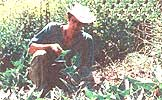
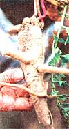
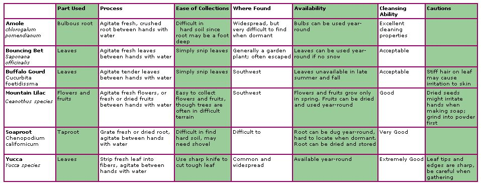

HERBAL REMEDIES
How to find and use some of nature's most common soaps.
Soap plants are quite a bit different from the "old-fashioned" soap that grandma used to make on the farm-those hard bars of soap that we associate with the pioneer days. Most of those soaps were made from a combination of animal fats (pig, cow, etc.) and lye (processed from wood ashes in the old days). Though making soap is a valuable skill, it's not what we're talking about here. We're speaking here of plants that are useful as a soap immediately, generally with very little processing.
Throughout most of the United States, one can find many soap plants occurring naturally in the wild. Most of these, not surprisingly, were used by some of the greatest medicinal plant utilizers in history, the Native Americans. In fact, there are dozens of plants that contain saponins, though not in volumes that make the plants especially useful as soap. Here is a list of our favorites.
Amole (Chlorogalum pomeridianum) is a fairly widespread member of the lily family with a tennis ball-sized bulb. The long, linear leaves measure a foot or longer, and they are wavy on their margins. When you dig down-sometimes up to a foot deep in hard soil-you'll find the bulb, which is entirely covered in layers of brown fibers. I have seen useful brushes and whisk brooms made from a cluster of these fibers that have been gathered and securely wrapped on one end with some cordage.
For the soap, you remove the brown fiber until you have the white bulb. It is formed in layers, just like an onion, and you'll find it sticky and soapy to handle. I have heard that some Indians ate these bulbs when roasted, but I always found that it was too much like eating soap! Perhaps I baked it wrong.
Take a few layers of the white bulbs, add water, and agitate between your hands. A rich lather results, which you can use to take a bath, wash your hair, or wash your clothes.
The bulbs can be dug year round if you know where to dig. When the plant is dormant in late fall and winter, there is only scant evidence to tell you that the bulbs are underground. Though the bulbs can be dug and dried for future use, the fresh bulb is superior.
Buffalo Gourd ( Cucurbita foetidissima ) is widely spread throughout the Southwestern United States and can be found in remote deserts and in urban vacant lots. It also goes by such local names as coyote melon and calabazilla. This is an obvious relative of squash and pumpkins. The Southwestern Indians have used the small orange-shaped gourds as rattles, though they make a somewhat inferior product. The wandering vine arises from a huge underground root, and the stiff leaves often stand upright. They have a unique aroma, and the leaves are covered with tiny rigid spines.
To make soap, pinch off a handful of the tender, growing tips, or just the older leaves if that's all you can find. Add water and agitate between your hands. A green, frothy lather results, which Southwestern tribes used for washing clothes. However, buffalo gourd is regarded by some as the soap of last resort since the tiny hairs may cause irritation to the skin.
Mountain lilac ( Ceanothus species ) is a shrub to a small tree that is fairly common throughout the West. When you are hiking through chaparral, desert, or mountain re gions in the spring, you will notice a spot of white or blue or purple on the hillside or along the trail. There are many species that you can use for soap, and they also go by the names of buck brush, snowbrush, and soapbloom. Since the botanical features of each species varies, the easiest way to determine if you have a mountain lilac is to take a handful of blossoms, add water, and rub between your hands. You'll get a good lather with a mild aroma if you have mountain lilac.
By late spring to early summer, the flowers fall off and the tiny, sticky, green fruits develop. These too can be rubbed be tween the hands with water to make a good soap. The fruits can also be dried and then reconstituted later when soap is needed. I tried making soap with fruits that I had dried five years earlier. The fruits were very hard, so I first ground them up in my mor tar and pestle. Then I added water, rubbed vigorously, and had soap. Not as good as from the fresh fruit, but soap nevertheless.
One of the more interesting wild soaps is found in a genus of mostly edible and medicinal plants. Soaproot ( Chenopodium califor nicum ) is related to the nutritious lamb's quarter ( C. album ), the quinoa ( C. quinoa ), and epazote ( C. ambrosiodes ). In fact, you could cook the leaves of soaproot, change the water, and serve it as you would spinach.
Soaproot has a large taproot, with a shape similar to a carrot or a large ginseng root. In hard soil the root can be a foot deep, and you'll need a good digging stick or a shovel to reach it.
To make soap, you first grate the root with your knife or with a kitchen grater. Then you add water and rub between the hands to get a top-quality, thick lather. It's a remarkable experience to produce that frothy lather from this plant. In most cases, it seems superior to even store-bought soaps, and it cleans quite well.
Native peoples often dried and stored this root for later use. When dry, it seems like a rock or a piece of hardwood. Yet, once grated and water added, you can still get a top-quality soap.
Unfortunately, soaproot seems to be found in scattered locations. It is possible that urban sprawl has destroyed much of this since soaproot grows from its perennial root. I have never found large patches of soaproot, only isolated patches. Therefore, you should use only small tap roots and leave the rest. I also take the seeds in summer and scatter them widely so more plants will grow. If you don't plan to take these precautions, I would suggest you leave this one alone entirely.
Finally, we come to the yucca plant ( Yucca species ). There are numerous species of yucca found widely, mostly throughout the Plains and Western states. They resemble large pin cushions with their long, linear, needle-tipped leaves. In fact, yucca can truly be called the "grocery store" or the "hardware store" of the wild since this plant produces not only soap, but several good foods, tinder, top-quality fiber, sewing needles, and carrying cases or quivers from the mature, hollowed-out flower stalks.
Though the use of the root has been widely popularized, I have found that one need only cut one leaf to make soap. To kill off a yucca just to wash your hands hardly seems justifiable. The soap from the leaf is perhaps 10 to 20 percent inferior to the soap from the root, but you get this leaf soap at perhaps 5 percent of the labor needed to dig up a root. When you need soap, carefully cut off one leaf. Be very careful not to slice your fingers on the very sharp edges of the leaf. To remove just one leaf, I have found the scissors of my Swiss Army knife work well. Then, snip off the sharp tip so you don't poke yourself. Strip the leaf into fibers until you have a handful of very thin strands. Then, add water, agi tate between your hands and you have a good-quality soap.
Typically, I show my students how to twine rope or weave cord from the yucca fibers. We make a length of about two feet and then once everyone makes green soap, I tell them that they have nature's very own "Irish soap-on-a-rope." The rope is the soap, and one strand lasts about a weekend when you're in the wilds.
Overall, yucca soap is the one I have used most often and in the most diverse of circumstances because the plant is widespread, easy to recognize, and is generally available for picking year-round. I even grow a few out back.
Most of us wouldn't have a clue how to make soap if we suddenly didn't have stores to go to, despite the free alternatives growing all around us. With a little help, perhaps the days of the $3 bar of "designer oatmeal facial cleanser" are numbered.
Christopher's Talking Leaves Newsletter is available from the School of Self-Reliance, P. O. Box 41834, Eagle Rock, CA 90041, or online at http://home.earthlink.itetlNyergesl. You can order Guide to Wild Foods through Mother's Bookshelf by calling 1-800-888-9098. Or send check or money order to Mother Earth News, P.O. Box 10941, Des Moines, IA 50340. Please use the product number MEB247 when ordering.
|
 Christopher Nyerges inspects buffalo gourd. |
 Soaproof and leaf |
 |